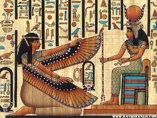
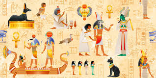

Mitologia Egipcia
Elaborado por: Ana Paola Vega Flores
La mitologia egipcia era la estructura de creencias y la forma subyacente de la cultura
egipcia desde, al menos, c. 4000 AEC (como lo demuestran las practicas funerarias y las
pinturas de tumbas) hasta el año 30 AEC con la muerte de Cleopatra VII, el ultimo de los
gobernantes ptolemaicos de Egipto. Cada aspecto de la vida en el antiguo Egipto fue
informado por las historias que relacionaban la creacion del mundo y el sostenimiento de
ese mundo por los dioses.
Las creencias religiosas egipcias influyeron en otras culturas a traves de la transmision a
traves del comercio y se volvieron especialmente extendidas después de la apertura de la
Ruta de la Seda en 130 AEC, ya que la ciudad portuaria egipcia de Alejandria era un
importante centro comercial. La importancia de la mitologia egipcia para otras culturas
radica en su desarrollo del concepto de vida eterna despues de la muerte, deidades
benevolas y reencarnacion. Se decia que tanto Pitagoras como Platon de Grecia habian
sido influenciados por las creencias egipcias sobre la reencarnacion y la cultura religiosa
romana, tomadas tan extensamente de Egipto como de otras civilizaciones.
La relacion de los egipcios con sus dioses
A excepcion del período de Amarna, en el que el faraon Akenaton decreto como unico Dios
a Aton, los egipcios fueron politeistas, lo que quiere decir que adoraban a distintos dioses a
los que veneraban con diversos propositos. Sin embargo, a lo largo de la basta historia de
esta civilizacion antigua, distintos dioses estuvieron a la cabeza como los mas importantes,
siendo siempre el faraon el representante de la deidad del cielo en la tierra, por lo que era
visto por el pueblo como un ser de luz especial y no solo como un gobernante.
La relacion de los egipcios con sus dioses era muy estrecha, en ellos encontraban la
explicacion a los sucesos naturales, a los giros que sus propias vidas daban, a diversos
aspectos relacionados con el alma y la naturaleza humana y a muchas de las cosas que
ocurrían a su alrededor, por ello los veneraban en santuarios y templos no oficiales, ya que
en los oficiales solo podían entrar los sacerdotes, les rezaban pidiendo que intercedieran
por ellos y realizaban diversos tipos de rituales para acercarse a sus deidades.

Information General Sobre sus Dioses
- Amon, el dios de la ciudad de Tebas
Ademas de ser el dios de la ciudad de Tebas, "el oculto", significado de su nombre, fue
adorado durante mucho tiempo como el creador supremo y la deidad mas importante de los
egipcios, sin embrago como hemos explicado anteriormente acabaria siendo absorbido por
Ra y convertido en Amon-Ra.
Durante un periodo inicial fue conocido como el dios de los vientos, por eso muchas
embarcaciones llevaban su nombre en el timon para encontrar protección durante sus
viajes.
- Osiris, el dios de la resurreccion
Osiris es uno de los principales y más importantes dioses de los egipcios. Segun decision
de su padre, esta deidad debia heredar el reino de la parte fertil de Egipto mientras que su
hermano Seth reinaria en la parte seca, pero este ultimo no soporto los celos y la envidia
que esto le causaba y decidio matarlo, cortando su cuerpo en 14 trozos que esparcio por el
mundo. La hermana de ambos, Isis, que luego se convertiria en la esposa de Osiris, se
encargo de reunir todos los trozos que encontro embalsamandolo para hacerlo resucitar
nuevamente. Se trata del primer indicio de momificacion en esta cultura.
Se creia que una vez al año Osiris moria y resucitaba, por lo que es la deidad de la
resurreccion y de los muertos. Debido a que se le atribuia la responsabilidad de las crecidas
del Nilo, es tambien un dios muy vinculado a la fertilidad y la agricultura.
- Isis, diosa de la vida
Hermana y esposa de Osiris, es la diosa mas importante para los egipcios, la madre de
todos los dioses y la dadora de vida. Se le consideraba la deidad de la maternidad y los
nacimientos pues fue la encargada de dar vida nuevamente a Osiris despues de que Seth lo
descuartizara.
- Horus, el dios del cielo
Representado con cabeza de halcon y doblemente coronado, Horus era el dios del cielo, el
hijo de Isis y Osiris quien tuvo que ser escondido por su madre pues su tio Seth tambien
queria matarlo para impedir que heredara el trono. Se le considera como el elevado, quien
lucha contra Seth para vengar lo que hizo con su padre, consiguiendo finalmente matarlo y
convertirse en el dios del mundo de los vivos mientras su padre gobernaba el mundo de los
muertos.
- Anubis, dios de las momificaciones
Representado tanto como hombre con cabeza de chacal como por un chacal, es el sobrino
de Osiris y uno de los primero dioses del más alla, siendo conocido como "el rey de la
necropolis". Es el encargado de presidir los rituales de momificacion y tambien de
acompañar el cuerpo del difunto al mas alla, guiandolo hasta su camino final.
- Seth, dios de las tinieblas o del desierto
Seth fue la personificación del mal y la destrucción en la mitología egipcia, esto
principalmente por su decisión de matar y descuartizar a su hermano. Su cabeza de extraño
animal reforzaba la creencia de que era un Dios oscuro, sin embargo también fue la deidad
del desierto pues a él le correspondió reinar en la parte seca de Egipto.
Pulsa aqui
La mitologia Egipcia cuenta con unos de los panteones de
dioses mas grandes.

Otros Dioses
| Dios |
Deidad de |
| Maat |
La justicia |
| Apis |
Fertilidad solar |
| Basted |
Nacimientos |